✒ Professional Experience
Infovista Ltd UK - Data Analyst + AI/ML Application Dev
Mar 2023 - Present
* because of NDA, I can't showcase any of my works here
Infovista Italy S.R.L (formerly Empirix Italy S.R.L) - Data Analyst Engineer + Tech Lead
Feb 2018 - Mar 2023
Transitioned into data analytics and technical leadership roles, contributing to enterprise data solutions and AI products.
Data Optima Lab - Research Asst. Politecnico di Milano
Oct 2016 - Oct 2017
Developed a data-driven model to forecast the energy consumption of HVAC systems with around 85% accuracy. Models used include Artificial Neural Networks, Support Vector Machines, and Random Forests. The accuracy of short-term and long-term forecast was also compared. To find out more, check the publication at MDPI. To know more about the reseach activites at Data Optima Lab, click here.
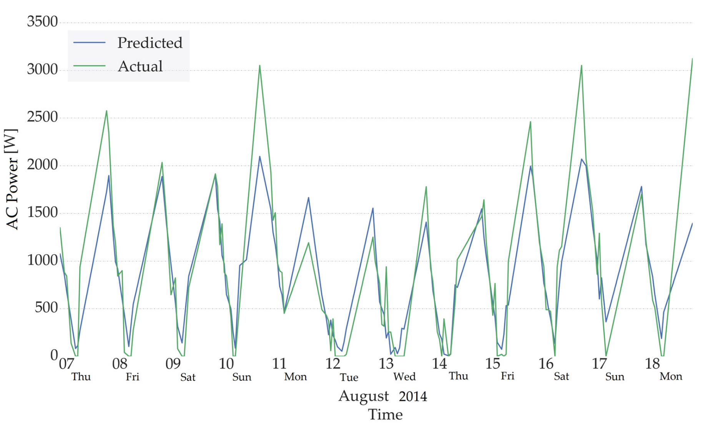
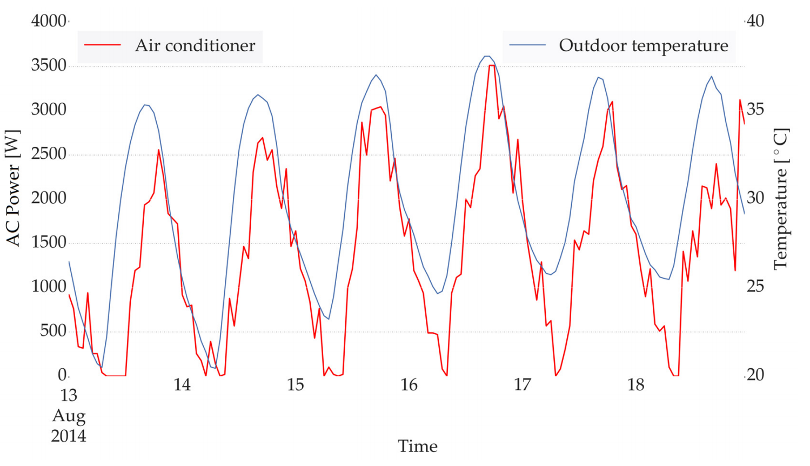
✒ Skills
✒ Data Science & Analytics
Combined Cycle Power Plant Regression using PyTorch
Jun 2022
Performed an exploratory data analysis, Principle component analysis and Linear Regression (PyTorch) on Combined Cycle Power Plant dataset from UCI Machine Learning Repository. Checkout the IPython Notebook here. If you wish to run the notebook, you can do so directly from Google Colab here.
Data Exploration
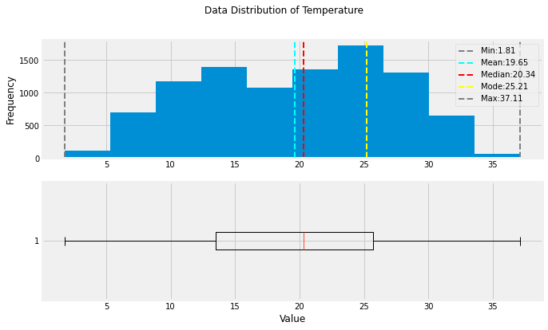
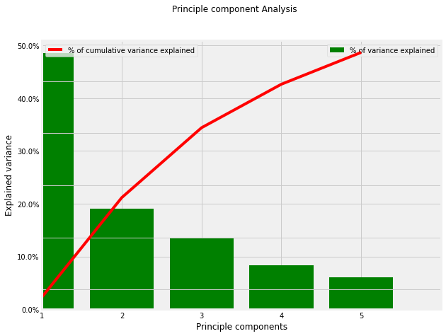
Linear Regression
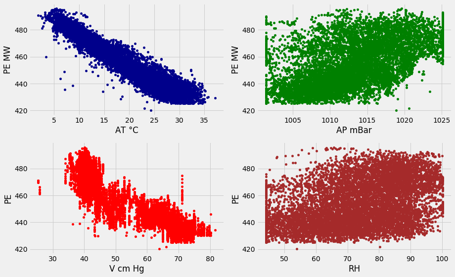
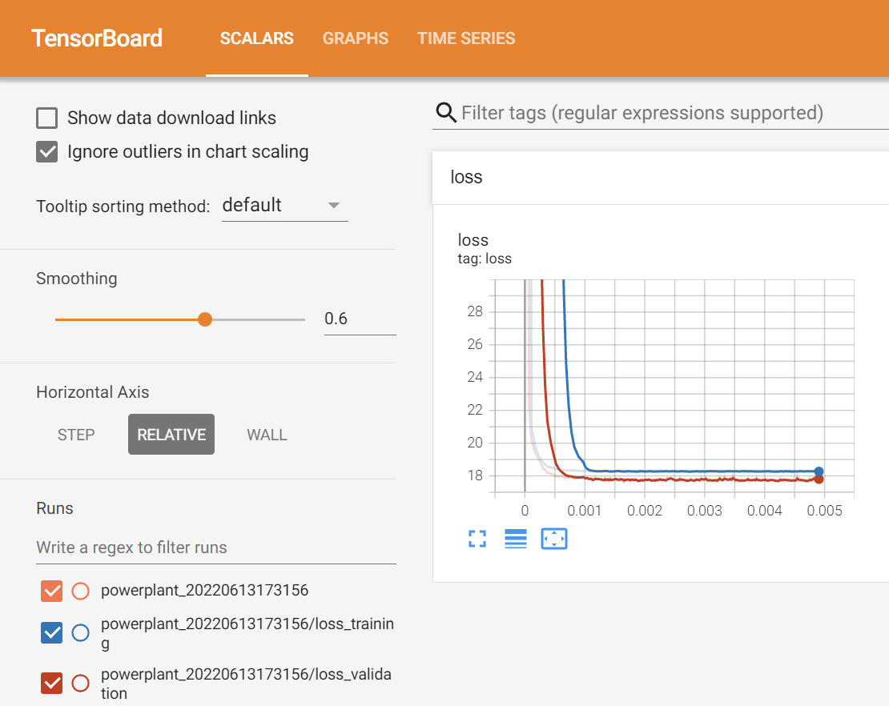
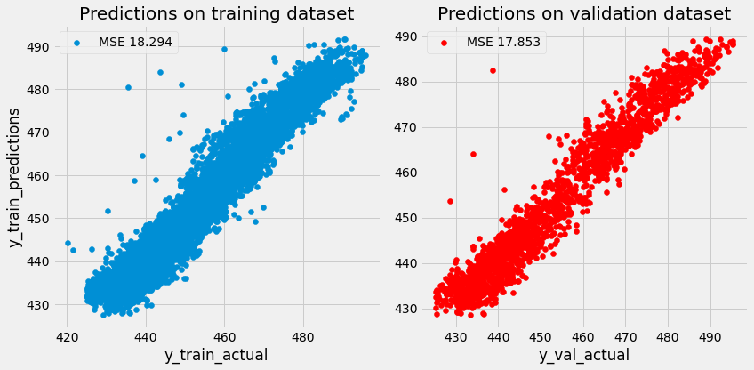
Health tracker dataset
Mar 2021
Performed an exploratory data analysis and Principle component analysis on health tracker dataset from my online course. Checkout the IPython Notebook here.
Data Exploration
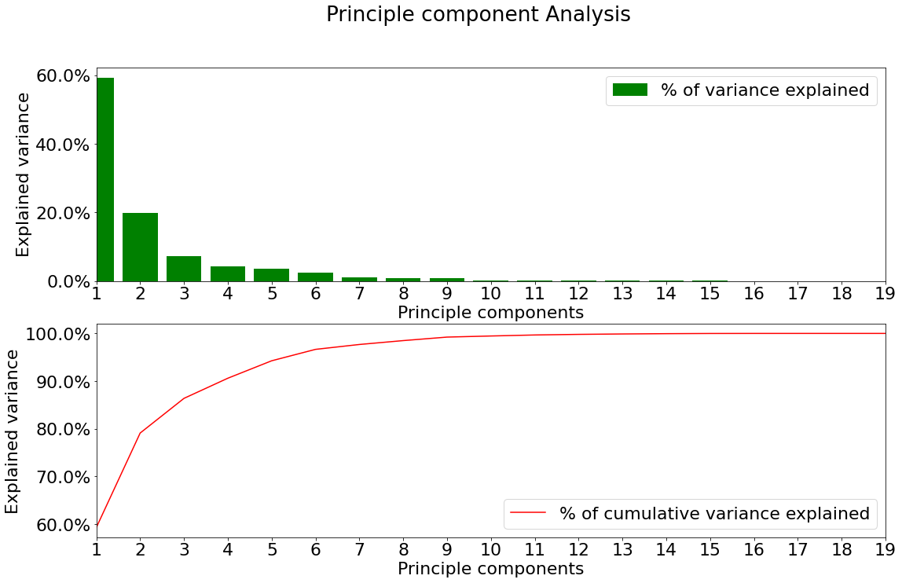
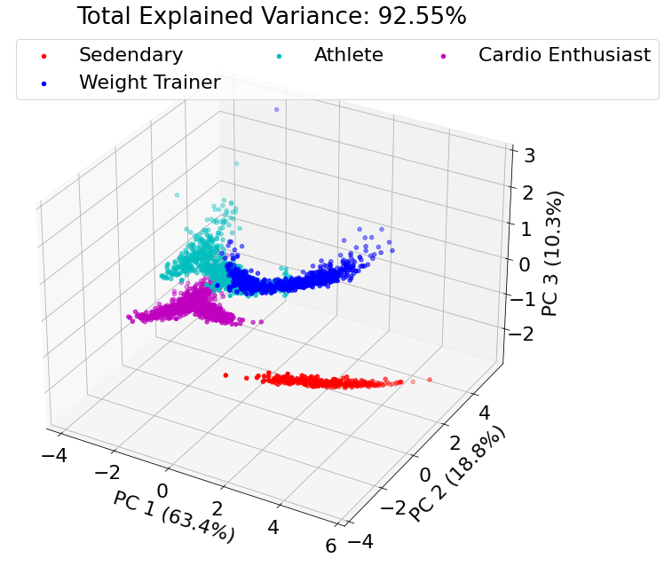
Bike Sharing dataset
Aug 2021
Exploratory data analysis on Bike Sharing dataset from UCI machine learning library. Checkout the IPython Notebook here.
Data Exploration
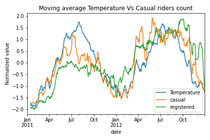
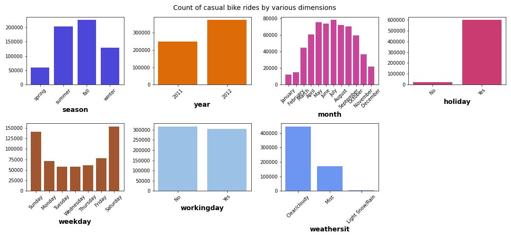
Regression Model
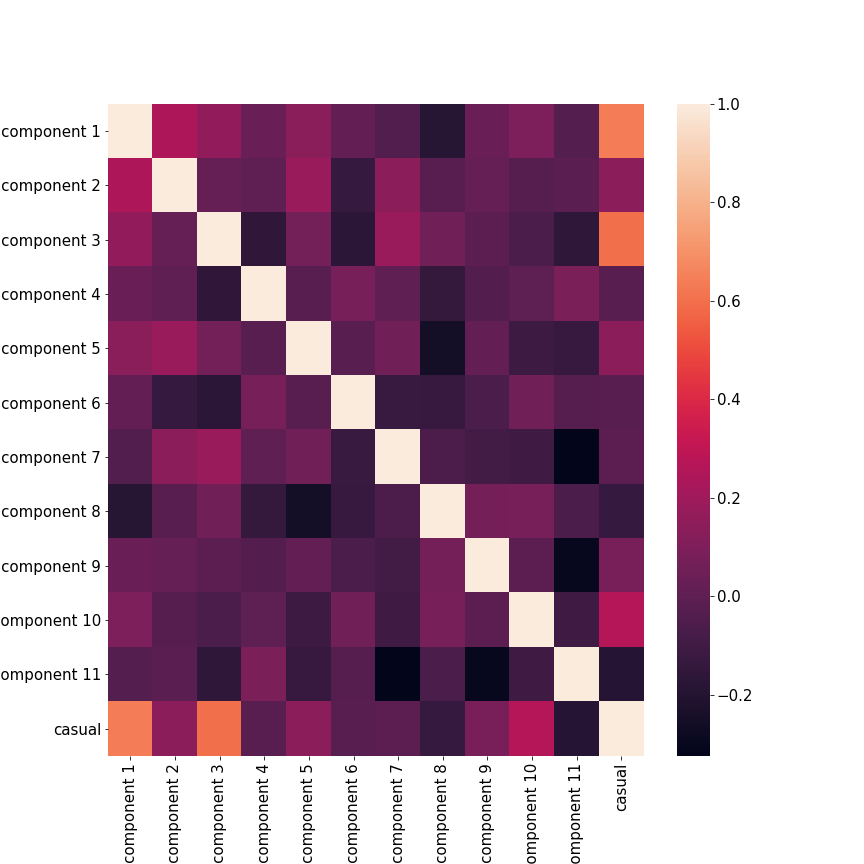
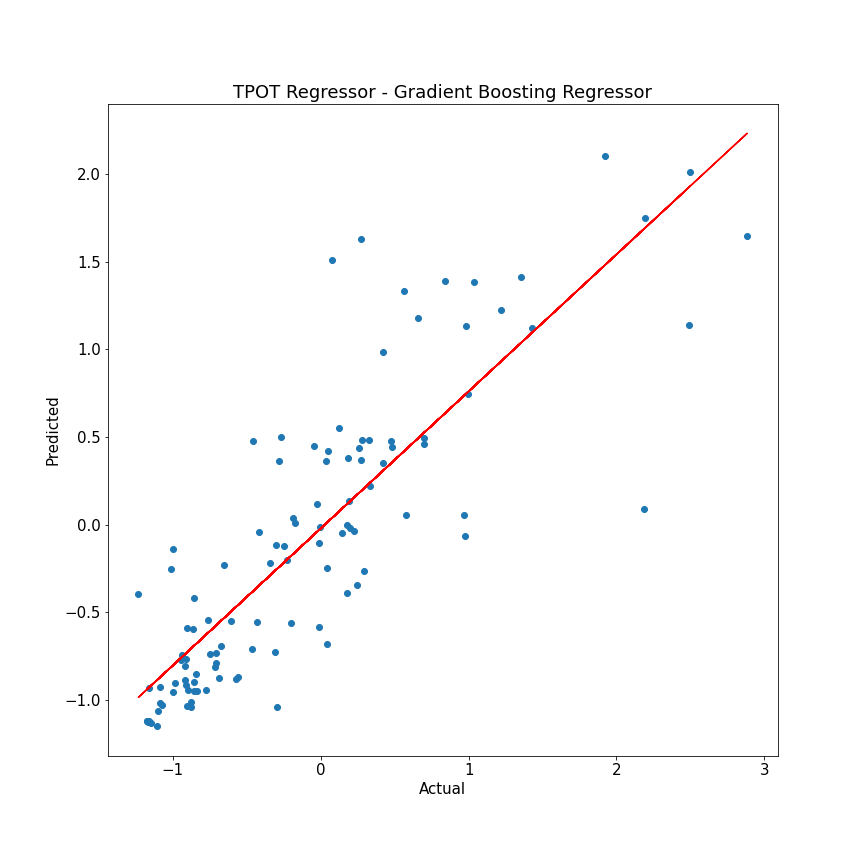
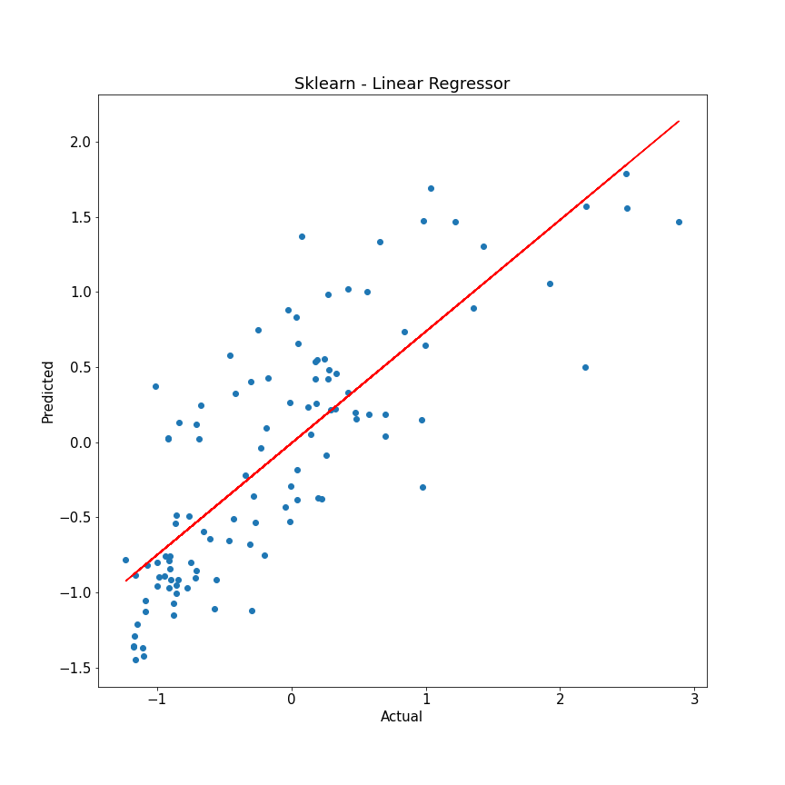
COVID-19 Dataset
Oct 2021
Exploratory data analysis on COVID-19 dataset from OWID. Checkout the IPython Notebook here.
Data Exploration
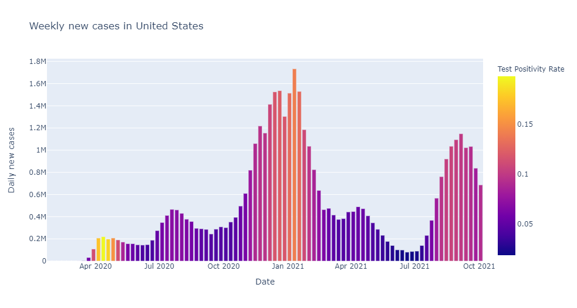
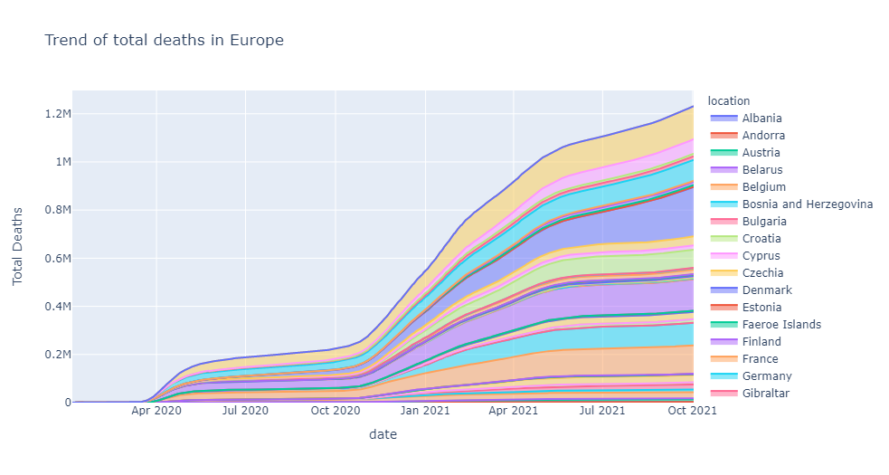
Air Quality Dataset
Oct 2021
Time series prediction using AutoML library TPOT of Air Quality dataset. Checkout the IPython Notebook here.
Time Series Prediction
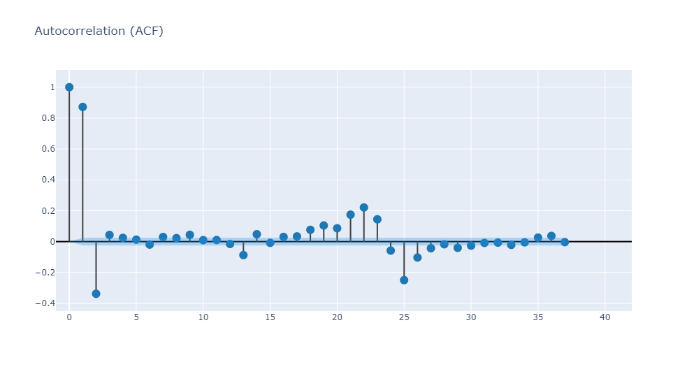
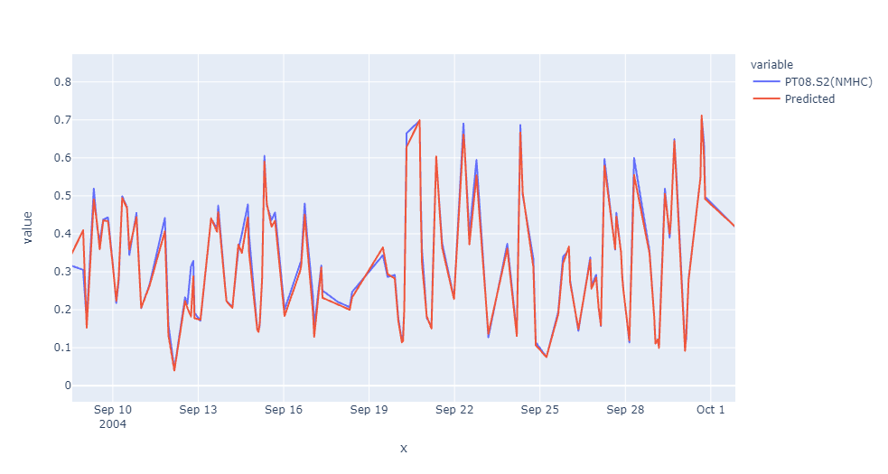
✒ Education
M. Sc - Energy Engg - Politecnico di Milano
Sept 2014 - Oct 2017
Pursed my master's degree at Politecnico di Milano, Italy with a fully funded scholarship for two and half years. One of my course which dealt with analytic evaluation of building systems, especially heating and cooling got me interested data science, analytics and machine learning to perform energy consumption prediction of AC units in residential buildings. It was this time when I was associated with the Data Optima Lab as a Research assistant.
B. Sc - Mechanical Engg - Anna University
June 2008 - Aug 2012
Pursed my bachelor's degree in Mechanical engineering at Rajalakshmi Engineering College, Chennai (Affliated with Anna University). Specializing in computational fluid mechanics and design of machines.
- Phone
- skype
- manojm18@live.in
- +44-7341230742
- manojmanivannan21876
- manojm18